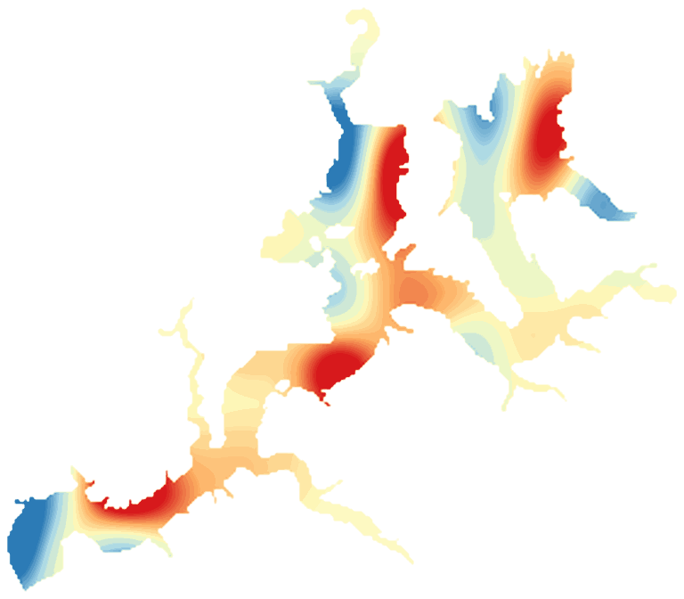

LakeScope › OK
Grand Lake today
Updated 2026-11-26 - Atlas Labs
Slightly murky, 56°F water, level steady, near normal, windy Thursday (15 mph NW).
Water level
742.00 ft
U.S. Army Corps of Engineers - 2026-11-26
7-day trend: steady (+0.04 ft). Compared with normal for this date: -0.1 ft (same weeks, 2016-2025).
Water clarity and algae
Slightly murky Last clear view: about a week ago. 1 cloudy pass since.
Surface temperature
56°F
seen from space on 2026-11-23

Ice
Open - 0% ice cover
Estimate from weather and satellite, not a measurement. Check the ice yourself before going on it.
Weather, next 3 days
| Day | Sky | High / low | Wind | Rain |
|---|---|---|---|---|
| Thursday | Partly Sunny | 43 / 28°F | 15 mph NW | 2% |
| Friday | Sunny | 55 / 40°F | 5 mph SW | 0% |
| Saturday | Partly Sunny | 60 / 43°F | 10 mph S | 0% |
Sunrise 07:08 - sunset 17:04 - Full moon. National Weather Service.
Get the LakeScope app: alerts and the 3-D view of Grand Lake